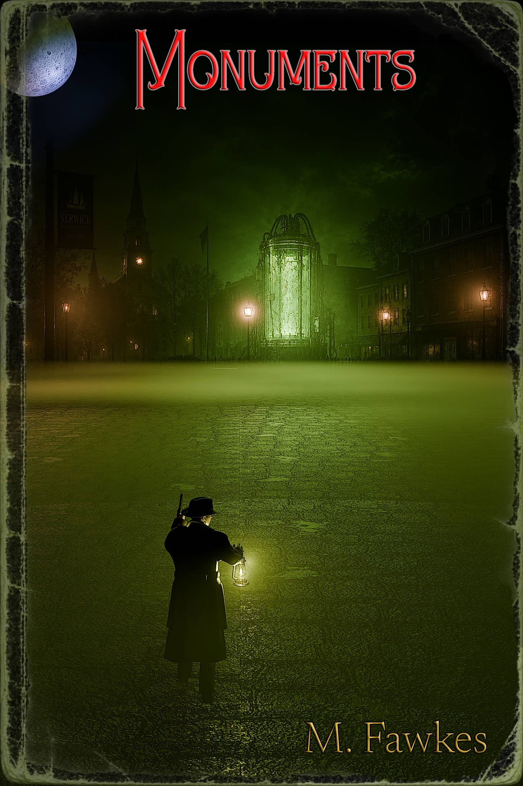

01 / The case
Monuments
A literary cosmic-horror noir novella by M. Fawkes.

Private investigator Vincent Trench has learned not to trust the world at night. He has learned not to trust his memories, either.
When Sarah Collins asks him to investigate the death of her boyfriend, Stephen, the case offers one impossible lead: a message from a phone line that no longer exists. The trail leads to Serwick, a drowned New England town where abandoned hotels rearrange themselves, a midnight theater knows his name, and every locked door seems to recognize his hands.
Beneath the fog, something is preserving the wreckage of an old experiment—and something else is still trying to get out.
- Unreliable narrators and investigations that turn inward.
- Drowned towns, impossible buildings, and corrupted records.
- Cosmic horror that asks moral questions instead of offering clean answers.
- Detective stories where the investigator may be part of the crime.
- Atmospheric, literary horror with surreal set pieces and a noir voice.
Release status
Monuments is now available as an ebook on Amazon Kindle. Grab your copy below—or request a free reader copy for review.
Buy now on AmazonContent notes
The novella contains cosmic and psychological horror, grief, altered states, addiction, disturbing imagery, body horror, violence, death, and themes involving medical experimentation and culpability.
Stay informed
The case is open. The book is out.
Buy the novella on Amazon, or request a free copy or release notice. If you read the book, an honest review helps—but no positive review is ever required.
Buy now on Amazon Join the reader's room Read the first chapter